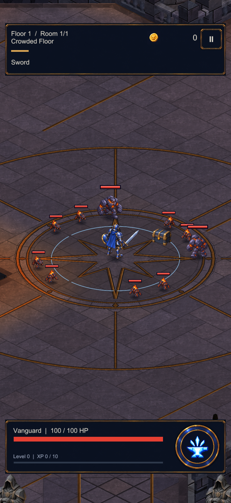
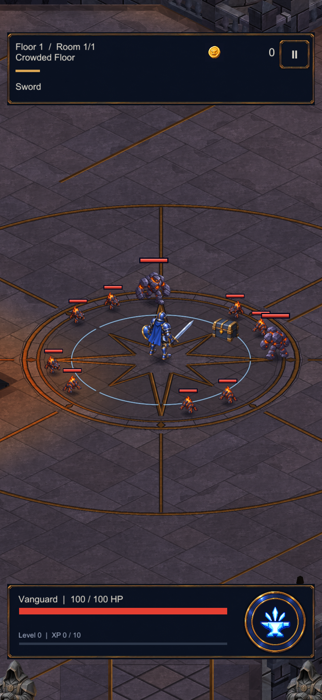
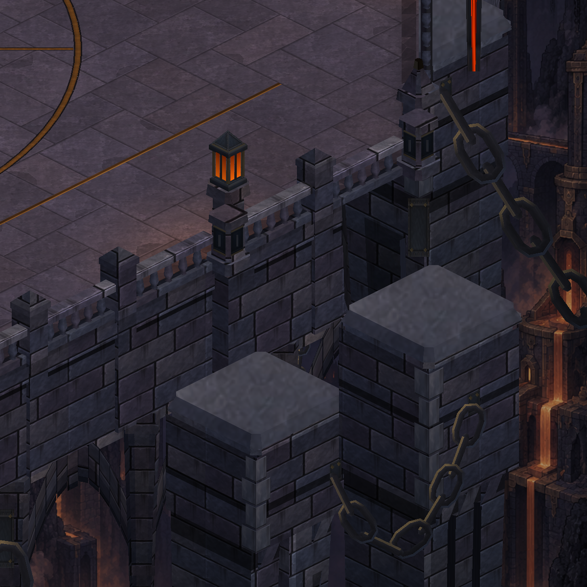
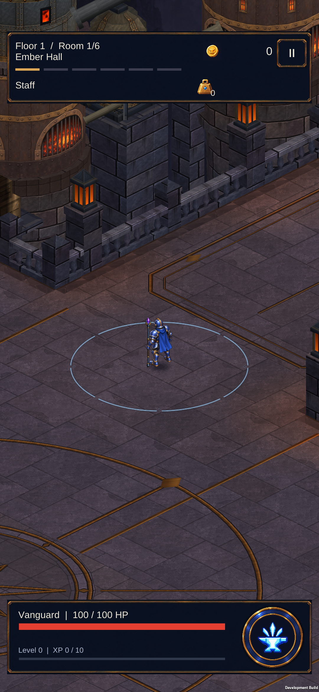
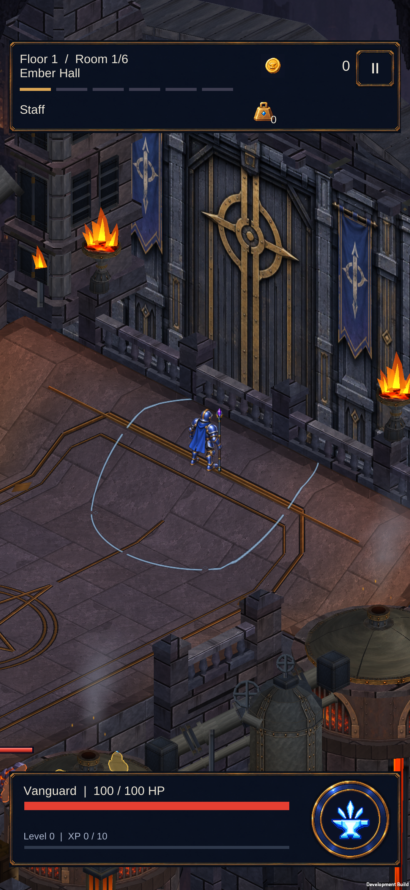
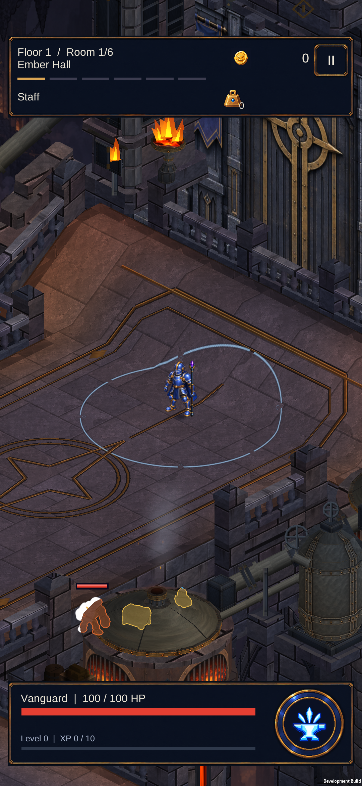
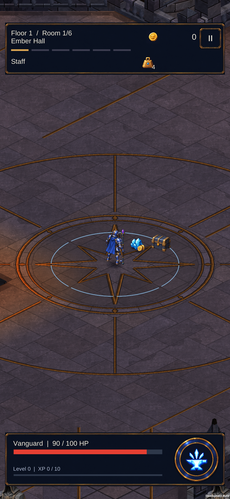

İşlenmiş taş ve oyuk taşıyıcı yüzeyleri
Zeminde seçili taşlara yüzey aşınması, uzun dış taşıyıcılara farklı derinlikte görünen taş oyukları eklendi. Yürünebilir alan ve onaylanmış harita düzeni aynı.
Telefon kamerasında taş yüzeyi

Önce
SonraHaritanın bütünü
 Önce
Önce Sonra
SonraDış taşıyıcılar

Unity yakın görünümü; uzun oyuk yüzeylerin tamamı genel harita görüntüsünde görülebilir.Unity görüntülerindeki karakter konumları inceleme için sahnelendi. Son doğrulama: 395 .NET, 415 EditMode ve 150 PlayMode testi geçti. Paket S23’e kuruldu; kayıtlar korundu.
Tam harita · Kapsam ve doğrulama
S23 cihaz görüntüleri
Yürüyüş ve rampa kontrolü gerçek sürüklemelerle yapıldı. Son görüntü ayrı bir normal koşudaki savaş sonrası ödülleri gösteriyor.

Kapı yolunda taş yüzeyleri
Yükseltilmiş kapı eşiği
Rampadan dönüş
Normal koşuda savaş sonrası ödüller